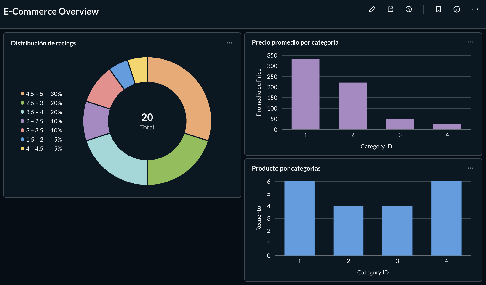

Hola, soy
Construyo pipelines de datos end-to-end con Python, Apache Airflow y PostgreSQL. Especializado en ETL, orquestación con Docker y visualización de métricas de negocio.
Ingeniero de datos en formación con experiencia práctica en el diseño y construcción de pipelines ETL completos. Mi enfoque combina buenas prácticas de ingeniería de software —como tests unitarios y contenerización con Docker— con herramientas modernas de procesamiento de datos.
He desarrollado un proyecto end-to-end que abarca extracción de APIs REST, transformación con Pandas, carga a PostgreSQL, orquestación con Apache Airflow y visualización con Metabase, todo desplegado mediante Docker Compose.
from airflow import DAG
from airflow.operators.python import PythonOperator
from scripts.extract import extract_data
from scripts.transform import transform_data
from scripts.load import load_data
with DAG(
dag_id='ecommerce_pipeline',
schedule='@daily',
default_args=default_args
) as dag:
extract = PythonOperator(
task_id='extract',
python_callable=extract_data
)
transform = PythonOperator(
task_id='transform',
python_callable=transform_data
)
load = PythonOperator(
task_id='load',
python_callable=load_data
)
extract >> transform >> loadPipeline ETL end-to-end con extracción de API REST, transformación con Pandas, carga a PostgreSQL y orquestación con Apache Airflow en Docker.
Consumo de API REST pública (Fake Store API) para obtener productos, usuarios y pedidos en formato JSON.
Limpieza y normalización con Pandas: tipos de datos, eliminación de duplicados, manejo de nulos y validaciones.
Inserción eficiente en PostgreSQL mediante SQLAlchemy y Psycopg2, con esquemas normalizados y data mart.
DAG en Apache Airflow con dependencias definidas (extract → transform → load) y ejecución programada.
Suite de tests unitarios con pytest para cada etapa del pipeline, garantizando calidad y robustez.
Dashboard interactivo en Metabase conectado a PostgreSQL: distribución de ratings, precios por categoría y más.

¿Tienes una oportunidad o quieres conversar sobre datos?
Estoy abierto a roles de Data Engineering Junior y proyectos colaborativos.